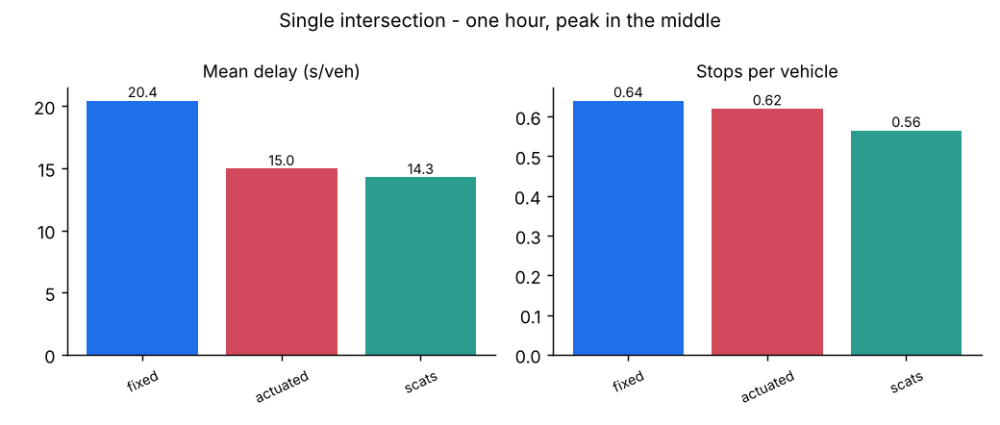
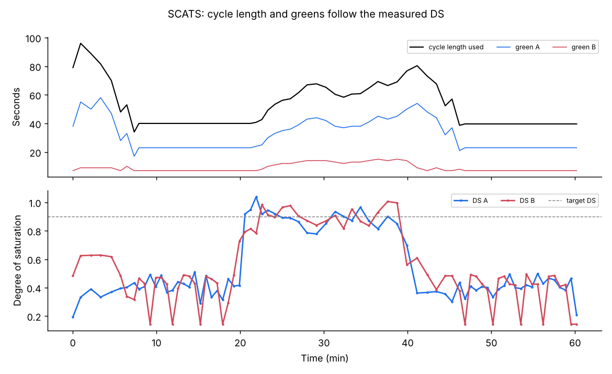

How an adaptive signal thinks
The vocabulary of signal timing, how SCATS measures traffic with one loop per lane, and why that single number, the degree of saturation, drives everything else.
Study guide and slides
Step through the slides or read the beginner study guide right here. Change slides with the arrow keys, the buttons, or a swipe; open full screen for teaching. Both can also be downloaded.
What SCATS is
SCATS, the Sydney Coordinated Adaptive Traffic System, was developed by the New South Wales Department of Main Roads from the 1970s and is owned and run today by Transport for NSW. It is one of the most widely deployed adaptive signal systems in the world, reported at more than 60,000 intersections across over 200 cities.
Its idea is simple. Instead of running a timing plan prepared months ago, SCATS measures how well each green was used in the last cycle, then nudges the timings for the next cycle. Small, frequent corrections keep the signals in step with real traffic.
- Adaptive
- Timings change automatically from detector data, cycle by cycle.
- Coordinated
- Neighbouring signals share a cycle and are offset so platoons meet green lights.
- Plan-based
- SCATS does not invent arbitrary timings. It chooses and blends from a library of engineer-approved split and offset plans.
Two levels of control
SCATS splits decisions by time scale. Fast decisions live in the roadside controller; slower, network-wide decisions live in a regional computer.
SCATS hierarchy
Who decides what, and how oftenTactical control runs in the local controller every second: it ends a green early when traffic has gone (gap-out), skips a phase nobody is waiting for, and responds to buses or emergency vehicles. Strategic control runs in the regional computer once per cycle: it measures demand, then sets the cycle length, the split plan and the offsets for a group of intersections called a subsystem.
Each intersection also has a fallback. If communications fail it can run Flexilink (time-of-day plans with clocks kept in step) or Isolated (local vehicle actuation). Full adaptive operation is called Masterlink.
The timing vocabulary
- Phase
- A set of movements that may run together. Here: A = main road, B = side road.
- Cycle (RL)
- Time for every phase to run once, including intergreens.
- Split
- Each phase's share of the available green. SCATS keeps a library of split plans (SP1 to SP4 here).
- Intergreen
- Amber plus all-red between phases. Lost to traffic, so longer cycles waste a smaller share of time.
- Offset
- When a cycle starts at one intersection compared with a reference one. Covered in Advanced.
Build a cycle
Change the cycle and split and watch the greensMeasuring demand: the degree of saturation
SCATS does not count vehicles directly. During each green it watches the loop at the stop line and adds up the gap time, when nothing is over the loop. A perfectly saturated stream of cars still leaves a small gap between each pair, the standard space time h. Gap time beyond that is green that was wasted.
- g
- green time available to the movement (s)
- T
- total unoccupied time at the loop during that green (s)
- n
- vehicles detected, which equals the number of gaps
- h
- standard space time: gap per vehicle at saturation flow (s)
- MF
- maximum flow, learned automatically (veh/h of green)
DS near 1 means the green was fully used. DS of 0.4 means more than half the green was empty road. Because DS is measured in time rather than vehicles, trucks and cars are handled consistently: a truck occupies the loop for longer, exactly as it uses more green.
DS calculator
A simulated loop record for one green. Bars are vehicles over the loop.Saturation here is one vehicle per 2.0 s (1800 veh/h) and each vehicle covers the loop for 0.45 s, so the true h is 1.55 s. Push the flow above 1800 veh/h to see DS settle near 1; set h too small and DS is under-estimated.
Fixed time, actuated and SCATS, side by side
Three controllers on the same intersection and the same arrivals. Fixed runs a 90 s plan regardless of traffic. Actuated uses the loops to end greens early (gap-out) but keeps a fixed maximum. SCATS adds the strategic layer: after every cycle it computes DS, moves the cycle length towards a target DS of 0.9, and votes on the best of four split plans.
Live intersection
Race the controllers
One simulated hour each, identical random arrivals, peak in the middleAt a single isolated intersection SCATS and good vehicle actuation usually finish close together, and either can win on a given day: both end greens when traffic clears. SCATS earns its keep through coordination of many intersections, which the Advanced corridor shows.
| Controller | Mean delay (s/veh) | Mean queue (veh) | Vehicles served | Cycles run |
|---|---|---|---|---|
| Press "Run the race". | ||||
Where fixed-time plans come from
Fixed-time plans are usually designed with Webster's formula, which balances lost time against queueing for one assumed demand. SCATS effectively re-solves this problem every cycle from measured DS, which is why it copes with demand that differs from the design day.
Webster calculator
Run it in SUMO
The same ideas run in a microscopic simulator. The SUMO code page explains installation; these three scripts make up the Foundation lab.
Lab F1: walk through DS cycle by cycle
python foundation/01_ds_lab.py --lane W_J1_1 --cycles 12
python foundation/01_ds_lab.py --h 1.0 # what if h is mis-calibrated?Prints g, T, n, wasted green, g', DS and VK for every cycle of one loop. Peak cycles reach DS ≈ 0.9; off-peak cycles sit near 0.3.
Lab F2: calibrate h and MF
python foundation/02_calibrate_h.pyOverloads the main road and measures gap per vehicle at saturation. Our run gives h = 1.62 s and MF ≈ 1730 veh/h, the values the controller uses.
Lab F3: fixed vs actuated vs SCATS
python foundation/03_fixed_vs_scats.py # add --gui to watch SCATS in sumo-gui

Check your understanding
Ready? Continue to Advanced, where these pieces become a coordinated network.